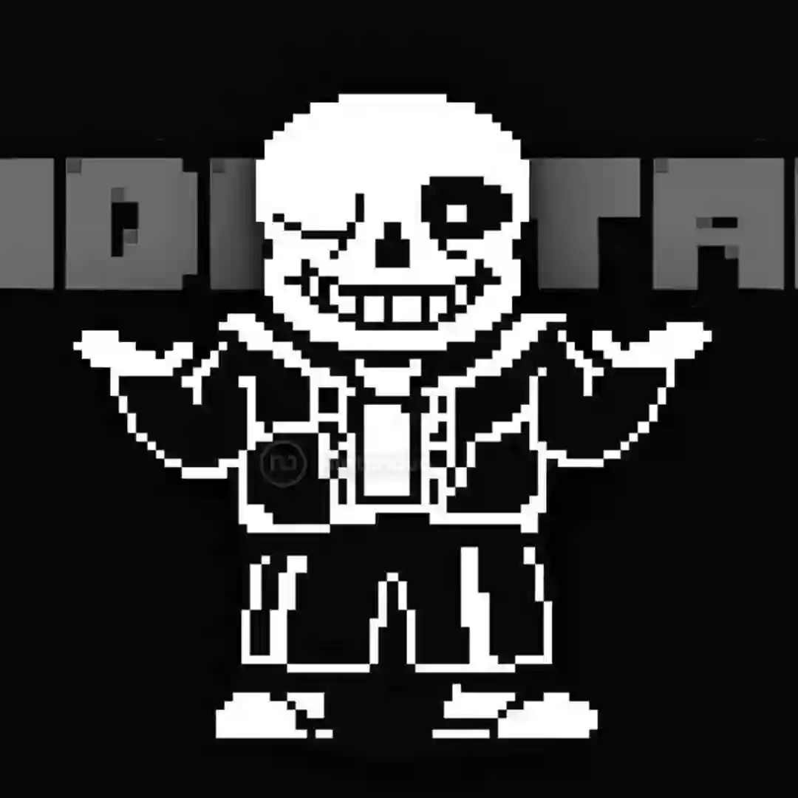

Undertale es un juego de rol independiente desarrollado por Toby Fox y lanzado en 2015. En él, los jugadores controlan a un niño que ha caído en un mundo subterráneo habitado por monstruos, donde cada decisión afecta la historia y las relaciones con los personajes. El juego es conocido por su innovador sistema de combate que permite evitar confrontaciones mediante diálogos o acciones pacíficas, su humor único, referencias culturales y una banda sonora memorable.
Toby Fox es el creador principal del juego, responsable del diseño, la historia, la música y gran parte del desarrollo, con apoyo limitado de colaboradores externos para arte y programación adicional. Undertale utiliza un estilo gráfico retro que recuerda a los juegos clásicos de 8 bits, combinado con mecánicas modernas de rol y narrativa interactiva.
A lo largo de los años, Undertale ha recibido pequeñas actualizaciones que corrigen errores y mejoran la compatibilidad con diferentes plataformas. Además, su éxito ha llevado a la creación de contenido adicional por la comunidad, mods, fanarts y adaptaciones que mantienen vivo el interés en el juego, consolidándolo como un clásico moderno de los juegos independientes.